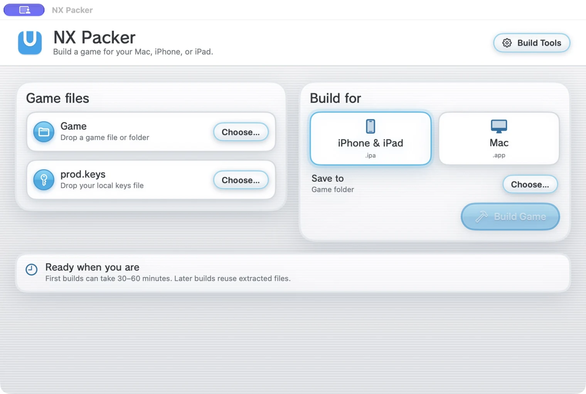

NX Packer 0.1.0
Apple silicon · macOS 26.6 or later

Build a game with NX Packer. Use NX Pad as your Joy-Cons over Wi-Fi.
Apple silicon · macOS 26.6 or later
iOS 26 or later · Build with Xcode

Build a game on your Mac

prod.keys if it is encrypted.Install Xcode 27.2, Homebrew, and arm64 Python 3.12 or later. Run these commands in your tools folder, then choose venv/bin/python3 in Build Tools.
sudo xcode-select -s /Applications/Xcode.app
xcodebuild -downloadComponent MetalToolchain
brew install xcodegen zstd glslang
python3 -m venv venv
venv/bin/python3 -m pip install lz4 "capstone>=5,<6" fonttools nsz zbic "backports.zstd; python_version < '3.14'"For IPA builds, install the iOS platform in Xcode Settings. Switch 2 .nup files need no keys. Choose Mac for Switch 2 titles.
NX Packer is signed ad hoc. See Apple’s guidance if macOS shows a first-launch prompt.
Use your iPhone as a controller

On your Mac, run these commands from the unzipped NX Pad source.
brew install xcodegen
cd dm/joypad
xcodegen generateIn Support/Signing.local.xcconfig, set your Xcode team ID and a unique bundle identifier.
DEVELOPMENT_TEAM = ABCDE12345
PRODUCT_BUNDLE_IDENTIFIER = com.yourname.nxpadConnect your iPhone, enable Developer Mode if prompted, and run NXPad.xcodeproj on the device. Allow Local Network access when NX Pad asks.
Choose a game and its keys if needed. Open Build Tools to check the source folder and Python executable.
Check Wi-Fi and Local Network access. Open the game’s pairing window. Older Mac builds need to be rebuilt with NX Pad support.